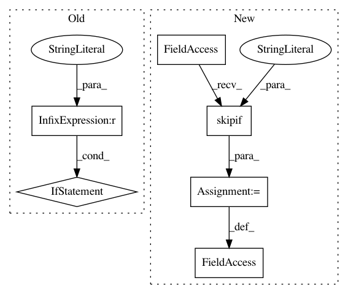

cdf8808143dbcfaddbd00a99aa0d28cabb5ad7d7,scipy/weave/tests/test_wx_spec.py,,,#,110
Before Change
c = wx_return.test(b)
assert(c == "hello")
if __name__ == "__main__":
nose.run(argv=["", __file__])
After Change
except ImportError:
wx = None
skip = dec.skipif(True, "Cannot import wx, skipping ")
class TestWxConverter(TestCase):
def setUp(self):
if wx:
In pattern: SUPERPATTERN
Frequency: 3
Non-data size: 6
Instances
Project Name: scipy/scipy
Commit Name: cdf8808143dbcfaddbd00a99aa0d28cabb5ad7d7
Time: 2008-06-22
Author: cournape@gmail.com
File Name: scipy/weave/tests/test_wx_spec.py
Class Name:
Method Name:
Project Name: keras-team/keras
Commit Name: 8f41e41eda6e8ea96403cae5798a5a89c8bb5605
Time: 2018-12-20
Author: frederic.branchaud-charron@usherbrooke.ca
File Name: tests/test_multiprocessing.py
Class Name:
Method Name:
Project Name: keras-team/keras
Commit Name: caceebcbe9afd0d4ff51cdfb88c16fd7f34ff104
Time: 2019-08-25
Author: francois.chollet@gmail.com
File Name: tests/keras/losses_test.py
Class Name:
Method Name: